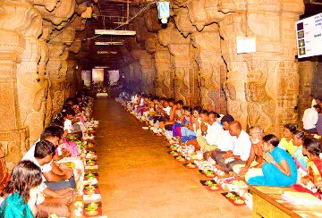

SRI KALAHASTI RAHU KETU PUOJA TIMINGS
Sri Kalahasti Rahu Ketu Pooja:
In Sri Kalahasti Rahu Ketu Pooja will be performed during Rahu Kalam Timngs, Devotee should plan accordingly so that he will available during Rahu Kalam Time at the Temple.
Sri Kalahasti Temple is always crowded with Rahu Ketu Pooja, with Devotees coming from different parts of the Country.
Sri Kalahasti Rahu Ketu Pooja is performed at different places within temple premises, Pooja Location depends on cost of the ticket. Sri Kalahasti Rahu Ketu Pooja, will be done outside main temple and inside Temple. Whatever it might be, Rahu Ketu Pooja benefit remains the same.

For Rahu Ketu Pooja at Sri Kalahasti Temple, Pilgrim is not required to carry any Pooja material, it will be provided at the ticket counter after purchasing Ticket.
Rahu Ketu Pooja Ticket, includes Pooja material (Pooja Samagri) so additional pooja materials are not required.
There are Shops who sell Pooja materials for Rahu Ketu Pooja, whatever you received from the Ticket counter will suffice Rahu Ketu Pooja requirements.
Sri Kalahasti Rahu Ketu Pooja will be performed in batches at Mandapam and in Halls, for which Entry and Exit Doors will be different as Devotee after completing Pooja should leave for Lord Shiva Darshan inside Temple.
For Rs.300 ticket, Everyone is allowed to take seat in a hall, it will be over crowded still you will space to perform Pooja. Temple priest will guide you through out the Pooja, He will speak in a mike so that it is audible to everyone. He will be briefing each step in Telugu, Tamil and English so that devotees can follow him easily.
If you have missed any steps, then you can seek help from Temple Staff who will be standing near to you. Rest of pooja process remains simple and it takes about 20-25 minutes for Pooja completion.
After finishing with Rahu Ketu Pooja at Mandapam, you need to carry the Silver Idols along with you and place them in The Hundi, which is Inside The Temple.
Procedure to be followed for Rahu Ketu Pooja:
1) A day before pooja, one should sleep on floor (Not Mandatory)
2) Next day morning after taking bath, plan to reach Temple little early and perform abhishekam with Milk ( 1 liter) to the Idols at Rudra Padam ( which is 100 ft from Pathala Ganapathi Temple) and then do 3 Pradakshinam to the Idols. Just sprinkle milk on the idols. Rudra Padam is the place where they used to perform Rahu Ketu Kala Sarpa Dosh pooja in olden days.
3) After Abhishekam, please perform Rahu Ketu Kala Sarpa Dosha Pooja
4) After pooja, please donate 2 -3 meal packets to the poor.
5) Now you are good to leave home. After reaching hotel, please take bath. No need to remove or throw clothes.
| S.No |
Sri Kalahasti Arjitha Sevas |
Ticket Cost |
Pooja Location |
Timings |
| 1 |
Suprabhata Seva |
Rs. 50 |
|
|
| 2 |
Gomatha Pooja |
Rs. 50 |
|
|
| 3 |
Archana |
Rs. 25 |
|
|
| 4 |
Sahasranamarchana |
Rs. 200 |
|
|
| 5 |
Thrisathi Archana |
Rs. 125 |
|
|
| 6 |
Rahu Ketu Pooja |
Rs. 300 |
Sri Krishna Devaraya Mandapam |
6 am - 6 pm |
| 7 |
Special Kala Sarpa Nivarana Pooja |
Rs. 750 |
Gnanambika Mandapam |
6 am - 6 pm |
| 8 |
Aseervachana Rahu Ketu Kala Sarpa Nivarana Pooja |
Rs. 1500 |
Dwajasthambham (Addala Mandapam)Outside temple near |
6 am - 6 pm |
| 9 |
Special Aseervachana Rahu Ketu Kala Sarpa Nivarana Pooja |
Rs. 2500 |
Inside temple. Near to Kalyanotsavam Mandamapam |
6 am - 6 pm |
For Better Pooja prospects, Rahu Ketu Pooja to be performed during Rahu Kalam Timings
| S.No |
Day |
Timings |
| 1 |
Sunday |
4:30 p.m To 6 pm |
| 2 |
Monday |
7:30 a.m To 9 a.m |
| 3 |
Tuesday |
3 p.m To 4:30 p.m |
| 4 |
Wednesday |
12:30 p.m To 1:30 p.m |
| 5 |
Thursday |
1:30 p.m To 3 p.m |
| 6 |
Friday |
10:30 p.m To 12:00 p.m |
| 7 |
saturday |
9 a.m To 10:30 a.m |
Sri Kalahasti Rahu Ketu Sarpa Dosha Nivarana Puja can be performed daily between 6:00 am - 6:00 pm. While you can perform pooja any time, performing pooja during Rahu Kalam is considered to be auspicious. Sunday and Tuesday are the best days to perform pooja as Sunday and Tuesday are the day considered to be for Rahu and Ketu .
Sri Kalahasti Rahu Ketu Pooja Ticket Cost and Mandapam Details
| S. No |
Sri Kalahasti Rahu Ketu Pooja Ticket Cost |
Sri Kalahasti Rahu Ketu Pooja place |
Persons Allowed along with devotee |
| 1 |
Rs.300 |
Hall outside Temple, within Temple Premises |
One person is allowed along with you, but He/She Should be in Standing mode right form beginning of the Pooja |
| 2 |
Rs.750 |
A/c Hall which has Siva Sannidhi Inside, within Temple Premises |
Person is allowed along with you and He/She can be seated along with you |
| 3 |
Rs.1500 |
Mandapam Outsidee Temple Premises (one can see this while going for darshan) |
2 Adults and 2 Kids are allowed along with you for the Pooja |
| 4 |
Rs.2500 |
Mandapam Inside Temple |
2 Adults and 2 Kids are allowed along with you for the Pooja |
Note:
Srikalahasti temple Rahu Ketu pooja timings always the same, so whoever wish to perform this pooja should be there at temple during Rahu kalam Time.